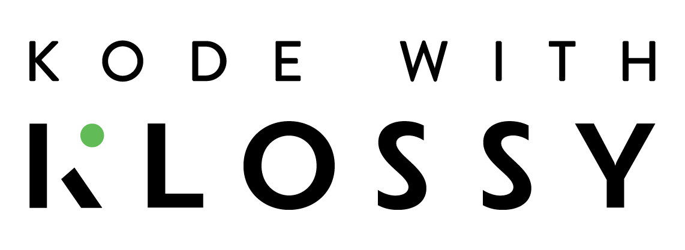
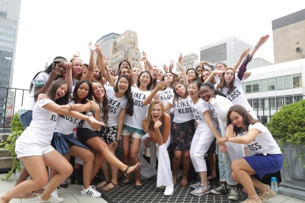

Kode with Klossy is a 2-week free summer coding camp for young girls! The goal is to give more girls an opportunity to join the tech world, not enough computer scientists are women and that needs to change. Karlie Kloss feels strongly about closing the gender gap in technology which is why she founded this program!